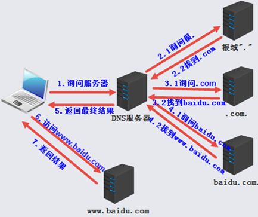

DNS解析流程

以访问www.baidu.com为例。
(1).客户端要访问www.baidu.com，首先会查找本机DNS缓存，再查找自己的hosts文件，还没有的话就找DNS服务器（这个DNS服务器就是计算机里设置指向的DNS）。
(2).DNS服务器收到询问请求，首先查看自己是否有www.baidu.com的缓存，如果有就直接返回给客户端，没有就越级上访到根域"."，并询问根域。
(3).根域看到是找.com域的，把到.com域的路(地址)告诉DNS服务器，让DNS服务器去找.com询问。
(4).DNS服务器去找.com，".com"一看是自己辖下的baidu.com，就把baidu.com的IP地址给DNS服务器，让它去找baidu.com。
(5).DNS找到baidu.com，baidu.com发现DNS服务器要找的是自己区域里的www主机，就把这个主机IP地址给了DNS服务器。
(6).DNS服务器把得到的www.baidu.com的IP结果告诉客户端，并缓存一份结果在自己机器中(默认会缓存，因为该服务器允许为客户端递归，否则不会缓存非权威数据)。
(7).客户端得到回答的IP地址后缓存下来，并去访问www.baidu.com，然后www.baidu.com就把页面内容发送给客户端，也就是百度页面。
上述情况是客户端所请求的DNS服务器没有缓存的情况，如果DNS服务器曾经受到过解析www.baidu.com的请求，并且缓存还在有效期内，则会直接将缓存结果返回给客户端。另外如果DNS服务器又收到ftp.baidu.com的解析，那DNS服务器会直接跳过"."和".com"，直接向"baidu.com"发出查询请求，并将ftp.baidu.com返回给客户端。
DNS缓存
先提一个概念权威服务器与非权威服务器。权威服务器即所解析域名的直接上层DNS服务器，举个例子，www.baidu.com对于这个域名来说，上层域baidu.com内负责dns解析的服务器就是www.baidu.com的权威服务器，也就是说，只有权威服务器上才会存储该域名的解析zone文件。权威服务器返回的解析结果称为权威应答，相对的，非权威服务器返回的解析结果称为非权威应答。非权威应答就是DNS缓存了。通过DNS缓存，可以加速解析并缓解根域名服务器的解析压力。缓存给出的非权威应答是有存活时间（即ttl）的，这是由权威服务器来指定的。另外，如果一个解析不存在，那权威服务器给出的否定答案也会被缓存下来。
DNS资源记录类型
DNS的internet类中有非常多的资源记录类型。常用的是SOA记录、NS记录、A记录(IPV6则为AAAA记录)、PTR记录、CNAME记录、MX记录等。
其中：(以下内容如果不了解，可以先跳过，在配置区域数据文件时回头来看)
(1).SOA记录：start of authority，起始授权机构。该记录存储了一系列数据，若不明白SOA记录，请结合下面的NS记录，SOA更多的信息见"子域"部分的内容。格式如下：
longshuai.com. IN SOA dnsserver.longshuai.com. mail.longshuai.com. (
1
3h
1h
1w
1h )
第四列指定了"dnsserver.longshuai.com."为该域的master DNS服务器。
第五列是该域的管理员邮箱地址，但注意不能使用@格式的邮箱，而是要将@符号替换为点"."，正如上面的例子"mail.longshuai.com."，其实际表示的是"mail@longshuai.com"。
第六列使用括号将几个值包围起来。第一个值是区域数据文件的序列编号serial，每次修改此区域数据文件都需要修改该编号值以便让slave dns服务器同步该区域数据文件。第二个值是刷新refresh时间间隔，表示slave dns服务器找master dns服务器更新区域数据文件的时间间隔。第三个值是重试retry时间间隔，表示slave dns服务器找master dns服务器更新区域数据文件时，如果联系不上master，则等待多久再重试联系，该值一般比refresh时间短，否则该值表示的重试就失去了意义。第四个值是过期expire时间值，表示slave dns服务器上的区域数据文件多久过期。第五个值是negative ttl，表示客户端找dns服务器解析时，否定答案的缓存时间长度。这几个值可以分行写，也可以直接写在同一行中使用空格分开，所以，上面的SOA记录可以写成如下格式：
longshuai.com. IN SOA dnsserver.longshuai.com. mail.longshuai.com. ( 1 3h 1h 1w 1h ) 前三列是声明性的语句，表示"longshuai.com."这个域内的起始授权机构为第四列的值"dnsserver.longshuai.com."所表示的主机。第五列和第六列是SOA的附加属性数据。
每个区域数据文件中都有且仅能有一个SOA记录，且一般都定义为区域数据文件中的资源记录。
注意，资源记录的作用之一是存储域相关的对应数据，所以第4、5、6列表示的是该SOA记录所存储的相关值。
(2).NS记录：name server，存储的是该域内的dns服务器相关信息。即NS记录标识了哪台服务器是DNS服务器。格式如下：
longshuai.com. IN NS dnsserver.longshuai.com. 前三列仍然是声明性语句，表示"longshuai.com."域内的DNS服务器(name server)为第四列值所表示的"dnsserver.longshuai.com."主机。
如果一个域内有多个dns服务器，则必然有主次之分，即master和slave之分。但在NS记录上并不能体现主次关系。例如：
longshuai.com. IN NS dnsserver1.longshuai.com. longshuai.com. IN NS dnsserver2.longshuai.com. 表示主机"dnsserver1.longshuai.com."和主机"dnsserver2.longshuai.com."都是域"longshuai.com."内的dns服务器，但没有区分出主次dns服务器。
不少朋友搞不懂SOA记录，也很容易混淆SOA和NS记录。其实，仅就它们的主要作用而言，NS记录仅仅只是声明该域内哪台主机是dns服务器，用来提供名称解析服务，NS记录不会区分哪台dns服务器是master哪台dns服务器是slave。而SOA记录则用于指定哪个NS记录对应的主机是master dns服务器，也就是从多个dns服务器中挑选一台任命其为该域内的master dns服务器，其他的都是slave，都需要从master上获取域相关数据。由此，SOA的名称"起始授权机构"所表示的意思也就容易理解了。
(3).A记录：address，存储的是域内主机名所对应的ip地址。格式如下：
dnsserver.longshuai.com. IN A 172.16.10.15 客户端之所以能够解析到主机名对应的ip地址，就是因为dns服务器中的有A记录存储了主机名和ip的对应关系。 AAAA记录存储的是主机名和ipv6地址的对应关系。
(4).PTR记录：pointer，和A记录相反，存储的是ip地址对应的主机名，该记录只存在于反向解析的区域数据文件中(并非一定)。格式如下：
16.10.16.172.in-addr.arpa. IN PTR www.longshuai.com. 表示解析172.16.10.16地址时得到主机名"www.longshuai.com."的结果。
(5).CNAME记录：canonical name，表示规范名的意思，其所代表的记录常称为别名记录。之所以如此称呼，就是因为为规范名起了一个别名。什么是规范名？可以简单认为是fqdn。格式如下：
www1.longshuai.com. IN CNAME www.longshuai.com. 最后一列就是规范名，而第一列是规范名即最后一列的别名。当查询"www1.longshuai.com."，dns服务器会找到它的规范名"www.longshuai.com."，然后再查询规范名的A记录，也就获得了对应的IP地址并返回给客户端。
CNAME记录非常重要，很多时候使用CNAME可以解决很复杂的问题。而且目前常用的CDN技术有一个步骤就是在dns服务器上设置CNAME记录，将客户端对资源的请求引导到与它同网络环境(电信、网通)以及地理位置近的缓存服务器上。关于CDN的简介，见下文CDN和DNS的关系。
(6).MX记录：mail exchanger，邮件交换记录。负责转发或处理该域名内的邮件。和邮件服务器有关，且话题较大，所以不多做叙述，如有深入的必要，请查看《dns & bind》中"Chapter 5. DNS and Electronic Mail"。
关于资源记录，最需要明确的概念就是它不仅仅用来区分和标识区域数据的类型，还用来存储对应的域数据。
这一部分我直接从网上黏贴过来了，讲了常见的几种记录。